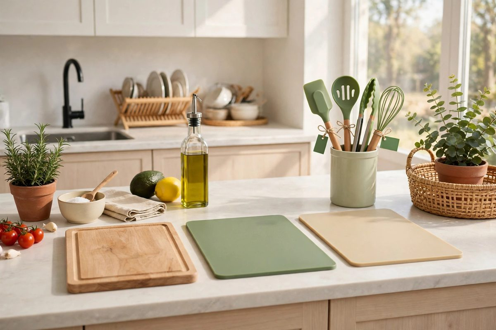

Home » Guides
Cross-Contamination Guide

For people with celiac disease, avoiding gluten in ingredients is only half the job. Cross-contamination, when a tiny amount of gluten transfers from one food or surface to another, can be enough to cause damage, even if the food itself is gluten-free. A shared toaster, a wooden spoon, or a crumb in a butter dish can all be a problem. This guide explains where cross-contamination happens, how to prevent it at home, and how to manage it in shared kitchens and restaurants.
Where cross-contamination happens
Cross-contamination happens wherever gluten and gluten-free food share equipment or surfaces. A toaster used for wheat bread leaves crumbs that transfer to gluten-free bread. A chopping board used for bread can carry crumbs into a salad. A wooden spoon or a colander can trap gluten in cracks and scratches. Shared butter, jam, and spreads can pick up crumbs from a knife. A fryer used for breaded food contaminates the oil for everything cooked in it. Even a shared oven can be a problem if crumbs fall onto gluten-free food. Knowing these routes is the first step to preventing them.
Preventing cross-contact at home
Use separate equipment for gluten-free food where it matters most: a separate toaster, separate chopping boards, and separate wooden spoons. Use squeeze bottles for butter, jam, and spreads, or keep separate tubs labelled gluten-free. Store gluten-free food above wheat food in cupboards and the fridge, so crumbs cannot fall onto it. Clean surfaces well before preparing gluten-free food, and wash your hands after handling bread. Use separate colanders for pasta, because wheat pasta leaves residue. Label everything clearly, so other people in the house know what is safe.
Shared kitchens and families
In a shared kitchen, a few habits make a big difference. Prepare gluten-free food first, before any wheat food is handled, so surfaces are clean. Use clean cloths and sponges, and replace them often. Keep a dedicated shelf or box for gluten-free food, clearly labelled. Teach children and visitors the basic rules, and put a note on the toaster and the bread board. If the kitchen is very small, consider keeping wheat bread in a sealed box and using a separate toaster. It takes a little effort, but most families manage it well once the habits are in place.
Eating out and travelling
In restaurants, tell staff you have celiac disease and ask about fryers, toasters, and preparation areas. Choose simple dishes, such as grilled meat with rice, which are less likely to be contaminated. Ask for food to be prepared on a clean surface with clean utensils. When travelling, pack snacks and a few basics, such as gluten-free bread and crackers, so you are never caught without safe food. Carry a card in the local language explaining your condition if you travel abroad. A little preparation makes eating out and travelling much less stressful.
A safe kitchen routine
A safe kitchen routine makes cross-contamination unlikely. Prepare gluten-free food first, before any wheat food is handled, and clean surfaces before you start. Use separate equipment for gluten-free food, and keep it in a dedicated drawer or box so it is easy to find. Wash your hands after handling bread, and use clean cloths and sponges. Store gluten-free food above wheat food, so crumbs cannot fall onto it. These habits take a little effort at first, but they soon become automatic, and they give you confidence that the food you serve is safe.
Frequently Asked Questions
Can I use the same toaster for gluten-free bread?
No, not if you have celiac disease. Crumbs from wheat bread contaminate the toaster. Use a separate toaster or toaster bags.
Do I need separate chopping boards?
Yes, for gluten-free food. Wooden boards are hard to clean fully, so use separate plastic boards that are easy to wash.
Is a shared fryer safe for gluten-free food?
No. Oil used for breaded food contains gluten, so chips cooked in a shared fryer are not safe for celiac disease.
Important: if you have celiac disease or a wheat allergy, always check labels and look for certified gluten-free products. This site is general information only — talk to your doctor or a registered dietitian before changing your diet.